5.求三个数使它们的和为平方数，且其中任意一对的和都大于第三个某一个平方数．
设三个数的和是（x+1）2；令第一个+第二个=第三个+1，则第三个=
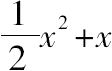
；令第二个+第三个=第一个+x2，则第一个=
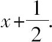
从而第二个=
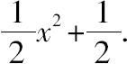
另外还有，第一个+第三个=第二个+平方数．
从而2x=平方数，不妨说=16，得x=8．
所求数为
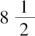
，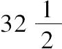
，40．另外一种解法如下[1]．
首先求三个平方数，使其和仍是平方数．例如求一个平方数+4+9仍是平方数，而36恰好适合；因此，4，36，9是具有所要求特性的平方数．
下一步求三个数，使其中任一对数的和=第三个+所给定的数；
在此情况下，假设
第一+第二-第三=4，
第二+第三-第一=9，
第三+第一-第二=36．
此题已解［卷Ⅰ，18］，
所求数依次为20，
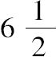
，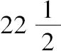
．从而
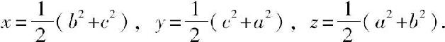
6.求三个数，使它们的和是平方数，且其中任意一对的和也是平方数．
令三个数之和为x2+2x+1，第一，第二之和为x2，因此第三个为2x+1；
令第二，第三之和为（x-1）2，因此第一个=4x，第二个=x2-4x．
但是，第一个+第三个=平方数，即6x+1=平方数，不妨说=121．
从而x=20，且
所求数为80，320，41．
[此处有一个替换解，明显是后来插入的．因为它本质上是一样的，不同的是取6x+1的值为36，从而x=35/6，且所求数为840/36，385/36，456/36．]
7.求三个成等差的数，使其中任意一对的和均为平方数．
首先求三个成等差的平方数，使其和的一半大于其中任一个数．
令其中第一个，第二个为x2，（x+1）2；
则第三个为x2+4x+2=（x-8）2，不妨说．
因此x=62/20或31/10；
从而可取三个平方数为961，1681，2401．
现在求三个数，使其中任意一对的和恰好等于所求出的数．
这三个数的和=5043/2=
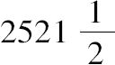
，且这三个数是
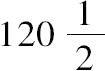
，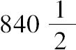
，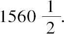
8.给定一个数，求另外三个数使其中任意一对的和加上此给定数均为平方数，且这三个数的和加此给定数也为平方数．
给定数为3．
设所求的第一个+第二个=x2+4x+1，
第二个+第三个=x2+6x+6，
三个数的和=x2+8x+13．
从而第三个=4x+12，第二个=x2+2x-6，第一个=2x+7．
还有 第一个+第三个+3=平方数，
即， 6x+22=平方数，不妨说=100．
因此 x=13，且
所求数为33，189，64
9.给定一个数，求另外三个数使其中任意一对的和减去此给定数均为平方数，且这三个数的和减此给定数也为平方数．
给定数为3．
设所求数的 第一个+第二个=x2+3，
第二个+第三个=x2+2x+4，
三个数的和=x2+4x+7．
从而第三个=4x+4，第二个=x2-2x，第一个=2x+3．
最后，第一个+第三个-3=6x+4=平方数，不妨说=64．
因此 x=10，且
（23，80，44）是一组解．
10.求三个数，使其中任意一对之积加上一给定数均为平方数．
设给定数是12．取一平方数比如25，并减去12，把差13作为第一，第二两数之积，
并设这两数分别为13x，1/x．
再从另一平方数比如16中减去12，并把差4作为第二，第三两数之积．
因此第三个数=4x．
第三个条件要求52x2+12=平方数；这里52=4·13，其中13不是平方数；
但是，如果13是平方数，这个方程就容易解了．[2]
因此必须找两个数以取代13和4，满足它们的积为平方数，
而其中任何一个数+12也是平方数．
如果两个数均为平方数，则二者之积也是平方数，因此必须找两个平方数，
使其中任何一个+12=平方数．
“按以前讲过的方法，这是容易做到的[3]，并且它可使方程容易解出．”
平方数4，1/4满足这一条件．
返回前面的步骤，现在设所求的三个数为4x，1/x和x/4．在此情况下，要解方程x2+12=平方数，不妨设=（x+3）2．
所以x=1/2．于是（2，2，1/8）是一组解．[4]
11.求三个数，使其中任意一对之积减去一给定数均为平方数．
设给定数是10．
取第一和第二之积=平方数+10，不妨说=4+10，并令第一=14x，第二=1/x．
取第二和第三之积=平方数+10，不妨说=19；
因此，第三=19x．
由第三个条件，266x2-10必须是平方数，但266不是平方数[5]．
因此，同上题一样，必须求两个平方数，使其中任何一个=平方数+10．
而平方数
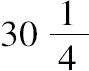
，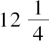
满足这些条件[6]．现令所求数为
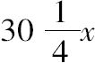
，1/x，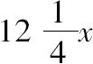
，由第三个条件可得
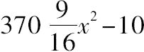
=平方数[其中丢番图把
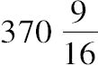
记为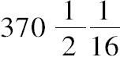
]；因此5929x2-160=平方数，不妨说=（77x-2）2，从而x=41/77．
所求数为
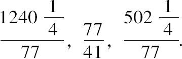
12.求三个数，使其中任意两个之积加上第三个均为平方数．
取一个平方数并减去其中一部分作为第三个数；
如令x2+6x+9是其中一平方数，且9是第三个数．
因此第一和第二之积=x2+6x；若取第一=x，则第二=x+6．
由另两个条件知
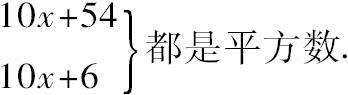
因此必须求两个平方数其差为48；“这是容易的，且方法很多”．
平方数16，64就满足此条件．令其等于相应表达式，可得x=1，且
所求数为1，7，9．
13.求三个数，使其中任意两个之积减去第三个均为平方数．
令第一为x，第二为x+4；则其乘积=x2+4x，因此可设第三为4x．
从而由其他条件知
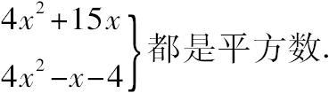
而其差=16x+4=4（4x+1），
若令
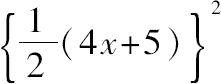
=4x2+15x从而x=25/20，且所求数为25/20，105/20，100/20．
14.求三个数，使其中任意两个之积加上第三个的平方，均为平方数[7]．
设第一个为x，第二个为4x+4，第三个为1．
则两个条件已经满足．
第三个条件是
x+（4x+4）2=平方数，不妨说=（4x-5）2，
因此x=9/73，且
所求数（省略公分母）为9，328，73
15.求三个数，使其中任意两个之积加上该两个之和均为平方数．[8]
［引理］任意两相邻数的平方的乘积，加上这两相邻数的平方的和，仍是平方数[9]．
令4，9为所求的两个数，x为第三个数．
因此
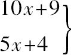
必须都是平方数．其差=5x+5=5（x+1）.
让两因子的和的一半的平方等于10x+9，
得
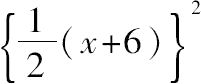
=10x+9．从而x=28，且（4，9，28）是一组解．
另一种解法[10]．
设第一个数为x，第二个为3．
因此4x+3=平方数，不妨说=25，
从而x=
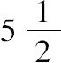
，且，3满足一个条件．令第三个是x，而前两个是，3．
因此
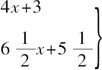
必须都是平方数．但是，这是不可能的．因为相应的系数没有一对的比率是平方数与平方数的比率．
为了用平方数与平方数的比率作系数替代
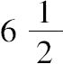
，4，因此寻求两个数来替代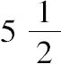
，3，使其满足它两的积加上它两的和等于平方数，且它两各加上1后其比率为平方数比平方数．为此令y和4y+3为这两数，显然满足第二个条件，为了第一个条件，必须让
4y2+8y+3=平方数，不妨说=（2y-3）2．从而y=3/10．
在解出3/10，
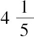
后，进一步假设第三个数为x，因此
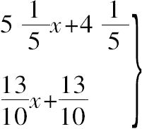
都必须是平方数或者在依次乘以25和100之后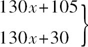
都必须是平方数，其差75=3·25，由通常的解法可知x=7/10，
因此所求数为3/10，42/10，7/10．
16.求三个数，使其中任意两个之积减去该两数之和均为平方数．
如果令第一个数为x，第二个数任意取值，那么会和上题一样出现相同的困难．
因此，必须寻求两个数，满足
（a）它们的乘积-它们的和=平方数，且
（b）各自减去1后，剩余部分具有平方数的比率．
显然4y+1和y+1满足后一条件．
而公式（a）要求
4y2-1=平方数，不妨说=（2y-2）2，
可得y=5/8，在得出13/8，28/8之后，然后令第三个为x，
因此
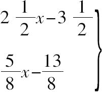
必须都是平方数．或者依次乘以4，16，
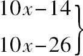
必须都是平方数．其差12=2·6，用通常方法可得x=3，
因此所求数为13/8，
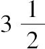
=28/8，3=24/8．17.求两个数，使其乘积加上每一个数以及两数之和，均为平方数．
假设所求数为x，4x-1，因为x（4x-1）+x=4x2都是平方数．
因此还有
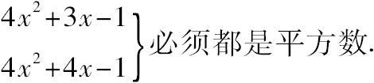
其差x=
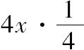
，可求出 x=65/224．所求数为65/224，36/224．
18.求两个数，使其乘积减去每一个数以及两数之和，均为平方数．[11]
假设所求数为x+1，4x，因为4x（x+1）-4x=平方数．
因此还有
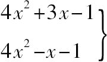
必须都是平方数．其差4x=4x·1，可得x=
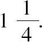
．所求数为
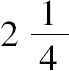
，5．19.求四个数，使其和的平方加上或减去任一单个数均为平方数．
因为在直角三角形中，
斜边的平方±2×两直角边的乘积=平方数，
因此必须求出四个具有相同斜边的直角三角形［在有理数范围］；
换句话，必须求一平方数，它可分为四组两个平方数之和．且“我们已经知道，将一平方数分为两平方数之和，其方式可以有任意多种．”［卷Ⅱ，8题］
取两个较小的直角三角形（3，4，5）和（5，12，13）；
给每个三角形的各边乘以另一三角形的斜边，则可得到两个具有相同斜边的有理直角三角形（39，52，65）和（25，60，65），从而652已分为两组两个平方数之和．
另外，由于65=13·5，且13=22+32，5=12+22，
所以65可分成两组两个平方数之和，亦即72+42和82+12．
现在由7，4构造直角三角形[12]，其边为（72-42，2·7·4，72+42）或（33，56，65）．
类似地，有8，1构造直角三角形，可得（2·8·1，82-12，82+12）或（16，63，65）．
总之，652已分成四组两个平方数之和．
现在假设四个数之和为65x，且
第一个数为2·39·52x2=4056x2，
第二个数为2·25·60x2=3000x2
第三个数为2·33·56x2=3696x2，
第四个数为2·16·63x2=2016x2，
以上x2的系数依次是四个直角三角形的面积的四倍．
其和12768x2=65x，且x=65/12768．
所求数是
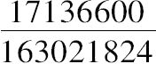
，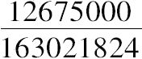
，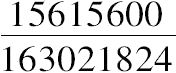
，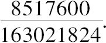
20.将一给定数分为两部分，并求一平方数，使其减去该两部分均为平方数[13]．
给定数10，所求数为x2+2x+1．取一部分为2x+1，另一部分为4x．
如果6x+1=10，那么条件都成立．
因此x=
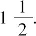
两部分为（4，6），平方数为
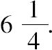
21.将一给定数分为两部分，并求一平方数，使其加上该两部分均为平方数．
给定数为20，所求平方数为x2+2x+1．
如果此平方数加上2x+3或者4x+8，结果仍是平方数．
因此取2x+3，4x+8为20的两部分，从而6x+11=20，x=
因此，两部分为（6，14），平方数为
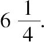
[1]可能像其他题的第二种解法一样，有人习惯性认为此替换解是后来插入的．但此解法如此巧妙，我们很难归功于后来的评注者．丢番图的解法通常都是可想到的最佳方法，此题不该例外．事实上，此替换解更优美，可以一般化为如下过程：欲求x，y，z，使
-x+y+z=平方数
x-y+z=平方数
x+y-z=平方数
x+y+z=平方数
令前三个表达式分别为平方数a2，b2，c2，且满足a2+b2+c2也必须是平方数，不妨记为k2．
[2]事实上，方程52x2+12=u2是可解的，明显x=1是一个解．亦可用y+1替代x，找到其他解，等等．而x=1本身就可得到此题的解（13，1，4）．
[3]此方法见卷Ⅱ，34题．需要求两对平方数，其差都是12．
（a）如果令12=6·2，有
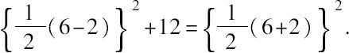
16，4就是相差12的平方数，换句话说，4就是一个平方数，其加12也是平方数．
（b）如果令12=4·3，可求出
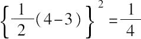
就是一个平方数，其加12也是平方数．[4]欧拉（Algebra，Part Ⅱ.Art.232）对此题的一般解给出了一个优美的解法．求x，y，z，使xy+a，yz+a，zx+a都是平方数．
设xy+a=p2，并令z=x+y+q；
因此xz+a=x2+xy+qx+a=x2+qx+p2，
且yz+a=xy+y2+qy+a=y2+qy+p2；
如果q=±2p，则右边表达式全为平方数，故取z=x+y±2p.
从而p可取任意的值，只要满足p2＞a，将p2-a分解为两因子，依次取为x，y的值，
z可得．
例如设a=12且p2=25，则xy=13；
让x=1，y=13，则z=14±10=24或4，
故解为（1，13，4），（1，13，24）．
[5]其实，方程266x2-10=u2本身是可解的，因为x=1显然是它的一个解．对应x=1可得此问题的解为（14，1，19）．
[6]唐内里对原文中求这两平方数的段落加注了括号，其过程不同于卷Ⅲ，10题，并指出是没有必要给出的．10=10·1，
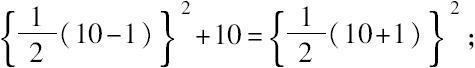
因此是一平方数且比另一平方数大10．
类似地也是如此的平方数．
但原文是，令m2-10=（m-2）2，从而m=，求出m2=
[7]Wertheim给出了如下更一般的解法．
如果取所求数为，Y=ax+b2，，则两个条件已经满足，
亦即XY+Z2=平方数，YZ+X2=平方数．
仅剩一个条件ZX+Y2=平方数还要成立．
即 =平方数．
令 =（ax+kb2）2，
则 ，其中k可任意取值．
[8]当然，用现代符号，此题可给出如下更漂亮的解法．（此注释也适合下题，卷Ⅲ，16题．）
若所求数为x，y，z，则xy+x+y，等等必须是平方数．
从而可得如下式子：
（y+1）（z+1）=平方数+1，
（z+1）（x+1）=平方数+1，
（x+1）（y+1）=平方数+1．
设平方数依次为a2，b2，c2，并令ξ=x+1，η=y+1，ζ=z+1，则有
ηζ=a2+1，
ζξ=b2+1，
ξη=c2+1.
［这个问题实际上和卷Ⅴ，8题的引理相同．］
用第二个乘以第三个方程，并除以第一个，得
而η，ζ的表达式类似可得．
x，y，z是这些表达式依次减去1．
另外a2，b2，c2的选取应满足ξ，η，ζ的有理性．参见Euler，Commentatious arithmeticae，Ⅱ.
[9]事实上，a2（a+1）2+a2+（a+1）2={a（a+1）+1}2.
[10]此替换解无疑是丢番图的．丢番图已经解出了方程组
yz+y+z=u2
zx+z+x=v2
xy+x+y=w2
费马后来用4个数替代3个数，想展示相应问题的解法．
为此他使用了丢番图卷Ⅴ，5题的解，亦即求x2，y2，z2，满足
y2z2+x2=r2，z2x2+y2=s2，x2y2+z2=t2，
y2z2+y2+z2=u2，z2x2+z2+x2=v2，x2y2+x2+y2=w2，
丢番图的解答是
费马直接用来作为4个数的前3个，它们满足条件：其中任意两个之积加上该两数之和均为平方数，并令x为第4个数．6个关系式中有了3个已满足，另外3个要求
均为平方数：因此费马的方法实际上要解一个“叁重方程”问题．
但是费马没有给出具体答案．我怀着好奇想查证即便针对这相对简单的情况，“叁重方程”方法会导致多么复杂的数字．
为此，当然可以忽略公分母9，解方程
34x+25=u2，
73x+64=v2，
205x+196=w2
由“叁重方程”得
其中分母等于（251322303399）2．
为了查证此解是否正确，我们发现确实：
严格地说，由于所求x的值为负，在三个方程中，应该用y-A替代之，并重新开始，由此而引起大量计算，我只好放弃了．
[11]此题可以和如下问题作比较，参见paragraph 42 of Part I.of the Inventum Novum of Jacobus de Billy（Oeuvres de Fermat，Ⅲ.）
求ξ，η（ξ＞η），使
ξ-ξη，
η-ξη，
ξ+η-ξη，
ξ-η-ξη
都是平方数．
假设η=x，ξ=1-x；则前两个条件成立．
由后两个条件得
x2-x+1=u2，
x2-3x+1=v2.
把差2x分解成两个因子2x，1，
按常用方法，令=x2-x+1，
从而，且所求数是
为了用上面的方法求出x的其他值，在双方程中，用代替x，从而
给第二个表达式乘以49，则有
其差是48y2-110y．
De Billy要求把这个差分解成两因子，当令两因子的差的一半的平方=时，方程两边常数项可以消失，为此，取两因子为，
如果令
容易得出，从而，
所求数是
De Billy还提到如下另一个解，
把48y2-110y分成两因子6y，
使其满足在所得的方程中x2项可以消失．
令=，
从而，且
这会导致1-x的值为负．
但是，De Billy考虑到最初的双方程中x的对称性，因为满足它，
必然也满足它．
从而所求数是
[12]如果有两个数p，q，由其构造直角三角形就是选取数（p2+q2，p2-q2，2pq），作为直角三角形的边，因为（p2+q2）2=（p2-q2）2+（2pq）2．
[13]此题和下题分别和卷Ⅱ，15，14题相同．因此可怀疑此处两题及其解答是否属于原文本，特别是古代评注者的插入题经常会出现在各卷首和卷末．